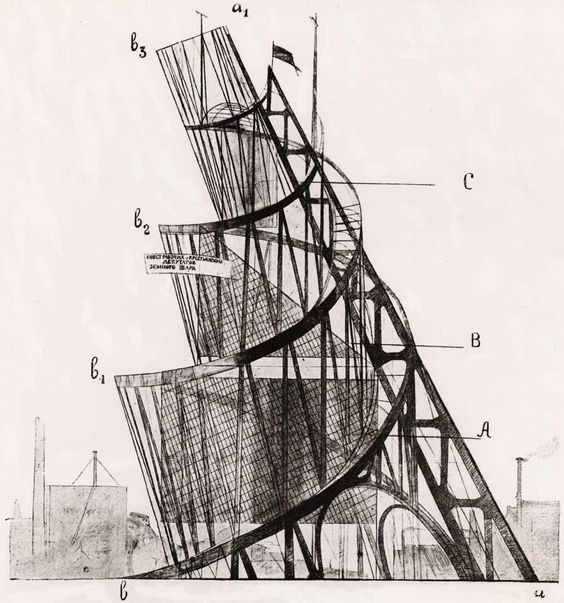
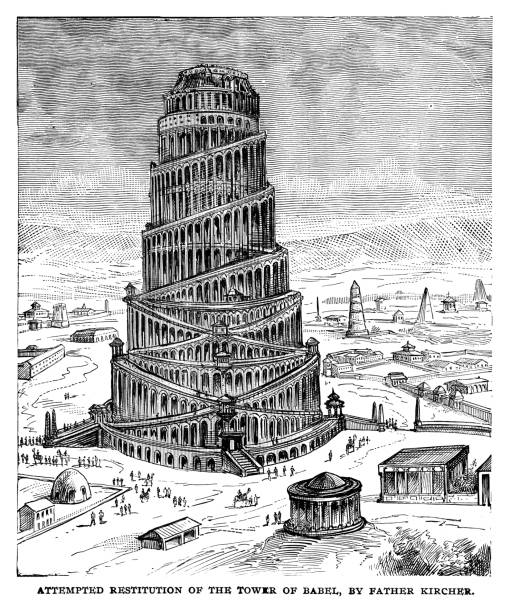
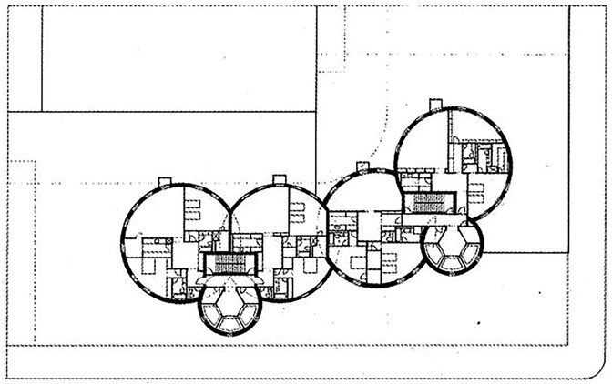
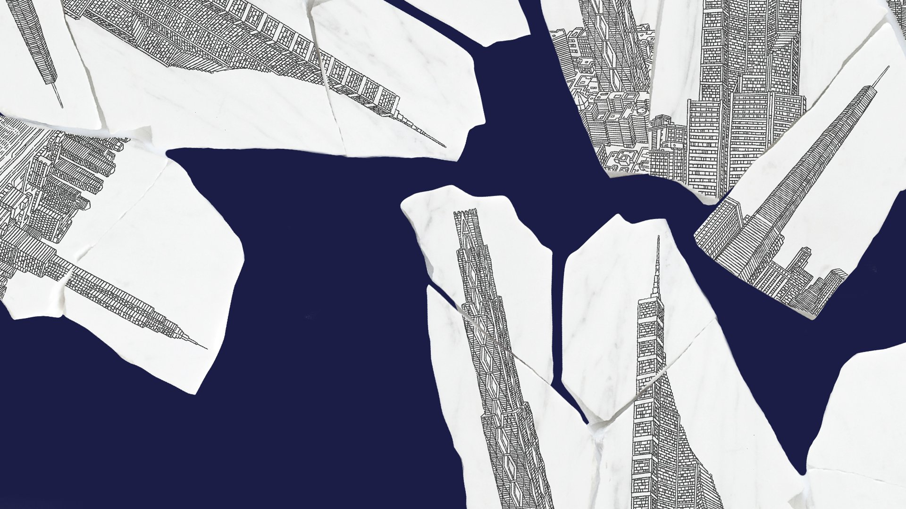

please make this text more sane/insane
these are towers that were never built. but they WERE built.
they exist as real things in our cultural landscape.
what is real and what is virtual.
it doesn't matter.
gertrude stein hates question marks because they are
unnecessary.
lots of things are unnecessary.
and arbitrary.
especially the DSM categories.
the purest form of communication is stream of consciousness
lots of people would agree so what if it is obtuse pretentious And
hard to understand
i was taught to communicate in this way so This
is what flows out of me therefore it is pure and true and i should
not apologize for it even if it
is inaccessible to most People
but why should authenticity be valued over clarity or persuasion
i mean it's all arbitrary anyway because no one ever
changes their
mind we are all pre programmed and it is useless to bother reprogramming
but unfortunately lots of people try like the capitalists and
bigbrother
and bigpharma why is everything bad also big like the bigbadwolf
these forces we are so powerless against we just call them big
but are
they really big and are we not ourselves a part of them?
...
i think the reason i am so concerned with insanity is that it is One
of the few cultural constructs that is still so naturalized and taken
as
legitimate and that really confuses me but also it makes sense
because it is one of the things we still do not understand psychology
is such a young
science and it has not really progressed all that much
because studying humans is much more controversial than studying atoms
even though humans are
atoms...or are we? i think humans are environments
and that is why i study sociology and not psychology because i believe
that we should change
environments and not humans because as they say
it is no measure of health to be well adjusted to a profoundly sick society
...
I think that if I keep reading and reading and reading things then eventually they will synthesize themselves in my brain almost automatically and come bursting out in something profound. Or at least, that is the hope. Maybe if I read too many things, there will be too much information in my head, and my ability to recognize patterns and synthesize information will be diminished. I straddle the delicate balance between real, constructive knowledge and information overload. I don’t know what it means to know something. Is there a difference between information and knowledge? Between knowledge and understanding?
Some people think creativity involves meditating on nothing. Very minimal inputs. If you get away from all the unnecessary information, then something will just spring out of you. Seeing clearly requires less information, not more.
I think the real way to reach eureka is probably a combination of lots of information and lots of reflection. That’s why the geniuses of the world work for four hours. That seems to be the magic number. But in the rest of the hours, they are probably thinking and thinking and ruminating. Or maybe not. Maybe they are letting their subconscious minds do it for them.
Hopefully I can make something of myself. I don’t really know what that means. I think I have to decide the meaning myself. Nietzsche says I have to do it without looking to what society says. It has to come from within myself. But isn’t my own biology just as arbitrarily determined as my environment? Why rely on one over the other? Is it even possible to do so?
I pretty much believe in determinism, so I might as well just do whatever seems to come to me without putting too much thought into why I’m doing it, because I cannot change the reasons why anyway.
This was a lot of pretentious philosophizing. Everything that has happened in my life so far has led to this. It is neither good or bad. It just is.




Please explore further. We have room service.
Whitewashed, stripped down.